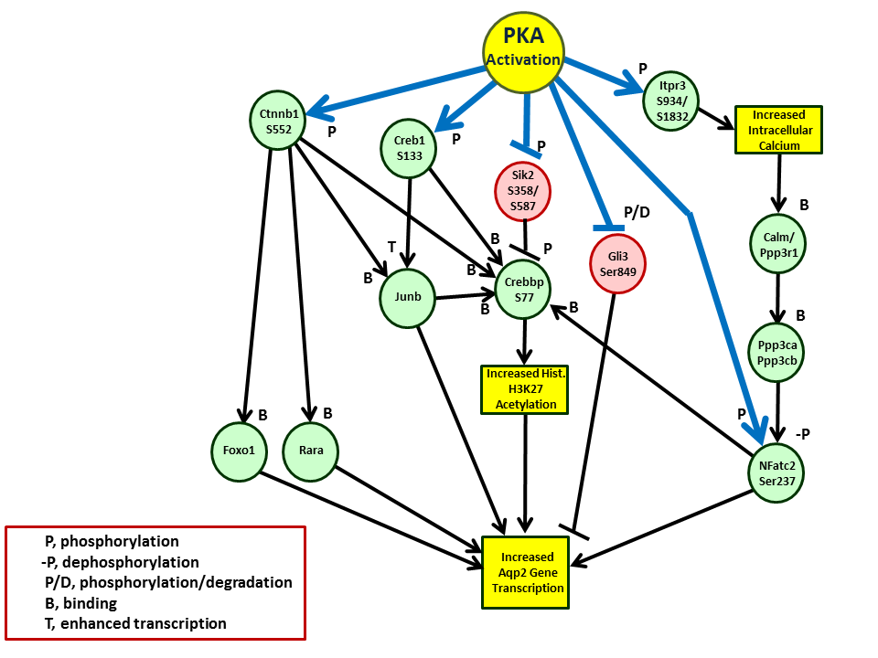

PKA Signaling - Regulation of Transcription
Source: Isobe K, Jung HJ, Yang CR, Claxton J, Sandoval P, Burg MB, Raghuram V, Knepper MA. Systems-level identification of PKA-dependent signaling in epithelial cells. Proc Natl Acad Sci U S A. 2017; 114: E8875-E8884. PMID: 28973931
(Place cursor over object to reveal documentation. Refences given as PMID numbers.)
